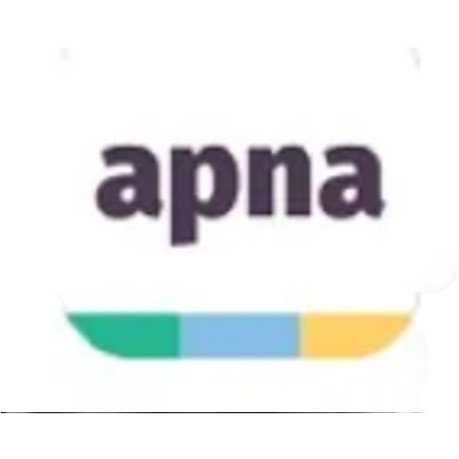
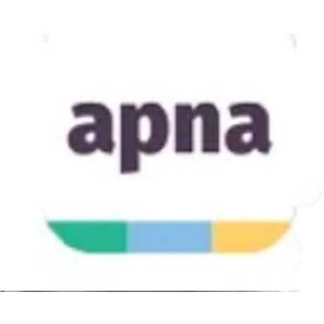

Web development refers to the creating, building, and maintaining of websites. It includes aspects such as
web design, web publishing, web programming, and database management. It is the creation of an
application that works over the internet i.e. websites.
The word Web Development is made up of two words, that is:
Web: It refers to websites, web pages or anything that works over the internet.
Development: It refers to building the application from scratch.
Web Development can be classified into two ways:
Frontend Development
Backend Development
Frontend Development
The part of a website where the user interacts directly is termed as front end. It is also referred to as the
‘client side’ of the application.

Popular Frontend Technologies :
HTML: HTML stands for HyperText Markup Language. It is used to design the front end portion of
web pages using markup language. It acts as a skeleton for a website since it is used to make the
structure of a website.
CSS: Cascading Style Sheets fondly referred to as CSS is a simply designed language intended to
simplify the process of making web pages presentable. It is used to style our website.
JavaScript: JavaScript is a scripting language used to provide a dynamic behavior to our website.
Bootstrap: Bootstrap is a free and open-source tool collection for creating responsive websites and
web applications. It is the most popular CSS framework for developing responsive, mobile-first
websites. Nowadays, the websites are perfect for all browsers (IE, Firefox, and Chrome) and for all
sizes of screens (Desktop, Tablets, Phablets, and Phones).
Backend Development
Backend is the server side of a website. It is part of the website that users cannot see and interact with.
It is the portion of software that does not come in direct contact with the users. It is used to store and
arrange data.

Popular Backend Technologies :
PHP: PHP is a server-side scripting language designed specifically for web development.
Java: Java is one of the most popular and widely used programming languages. It is highly scalable.
Python: Python is a programming language that lets you work quickly and integrate systems more efficiently.
Node.js: Node.js is an open source and cross-platform runtime environment for executing JavaScript
code outside a browser.
Databases
In web technology, a database is a structured collection of data that is stored electronically and accessed
via a web application. It serves as the backend component where data is stored, managed, and retrieved.
Databases can be relational (like MySQL, PostgreSQL) using structured tables and SQL for queries, or
non-relational (like MongoDB, CouchDB) which store data in flexible, document-oriented formats. They
enable web applications to handle dynamic content, user data, transactions, and more by providing
efficient storage, retrieval, and manipulation capabilities. Database management systems (DBMS) are
used to interact with the database, ensuring data integrity, security, and performance.
Relational Database
A relational database stores data in tables, similar to a spreadsheet, where each table has rows and
columns. The rows hold individual records, and the columns define the data attributes. Tables can be
linked to each other through special keys, allowing related data to be connected.
Postgre SQL: PostgreSQL is a powerful, open-source relational database that supports advanced SQL
features and complex queries. It handles structured data, ensures ACID compliance, and is known for
its reliability and extensibility.
MariaDB: MariaDB is an open-source relational database that evolved from MySQL, offering improved
performance, security, and features. It supports SQL queries, ACID compliance, and is highly
compatible with MySQL.
MySQL: MySQL is an open-source relational database management system that uses SQL for
managing structured data. It’s known for its reliability, ease of use, and performance, widely used
in web applications.
NoSql Database
A NoSQL database stores data in a flexible, non-tabular format, unlike traditional relational databases.
Instead of using tables with rows and columns, NoSQL databases might use documents, key-value pairs,
wide-columns, or graphs to store data. This allows them to handle large amounts of unstructured or
semi-structured data efficiently. They are designed to scale easily and manage big data applications.
Mongodb: MongoDB is a NoSQL database storing data in JSON-like documents. It handles
unstructured data, supports powerful queries, and scales easily across servers, making it popular for
flexible, scalable applications.
Cassandra: Apache Cassandra is an open-source NoSQL database that is used for handling big data.
It has the capability to handle structure, semi-structured, and unstructured data.
Redis: Redis is an in-memory NoSQL database known for its speed. It supports various data structures
like strings, hashes, and lists, making it ideal for caching, real-time analytics, and messaging.


 
